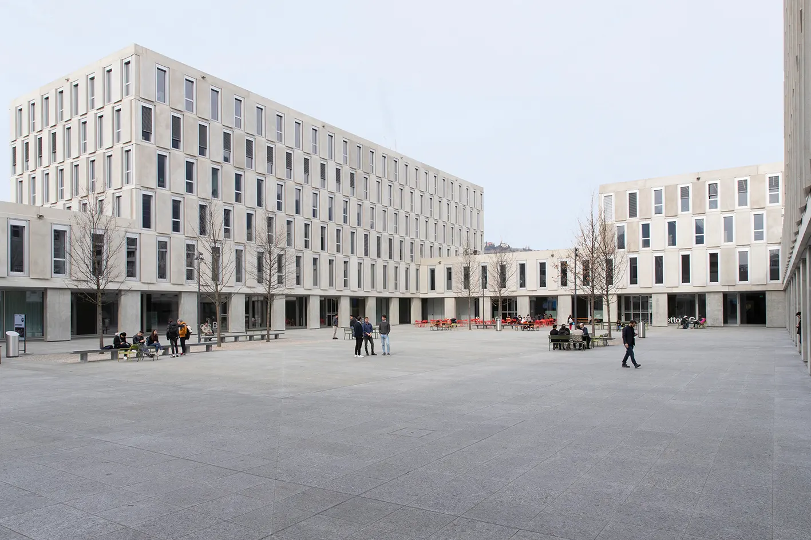

BSc Informatics
Sep 2025 — present · Lugano, CH
Università della Svizzera italiana
Faculty of Informatics
An internationally recognised centre for computer science, taught entirely in English and built around an innovative, project-based approach.
In the team-based "Software Ateliers" I bridge theory — advanced algorithms, discrete mathematics, systems architecture — with real-world engineering. It pairs naturally with my interest in machine learning.